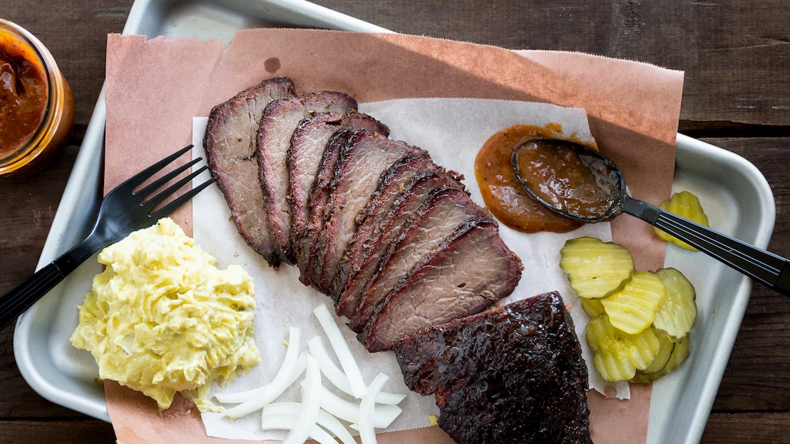

Texas-Style Barbecue Venison Roast

Ingredients
- 2 venison roasts (2-3 pounds each)
- 1/4 cup kosher salt
- 1/4 cup coarse black pepper
Barbecue sauce
- 1 Tbsp butter
- 3 Tbsp yellow onion, minced
- 2 Tbsp apple cider venagar
- 6 Tbsp water
- 1 cup ketchup
- 1/4 cup brown sugar
- 1 tsp ancho chili powder
- 1 tsp kosher salt
- 2 tsp course black pepper
Instructions
-
Heat a small pot over medium heat. Once hot, add the butter and onions, then sauté
until translucent. Whisk in the remaining ingredients and bring it to a soft boil.
Reduce the heat and
let the sauce simmer for about 15 minutes to reduce. Transfer
to a blender (or use an immersion blender) and purée until smooth. Set aside about
1/2 cup of the sauce and dilute it with
1-2 tablespoons of water to use for mopping.
-
Trim the silverskin on the outside of the roast and season liberally with salt and
pepper. Cover and refrigerate for 24 to 48 hours.
-
Prepare your smoker according to the manufacturer's instructions using your choice
of wood or pellets. Set the temperature around 180°F.
-
Place the venison on the top rack of the smoker if possible. Place a container or
foil tray filled with water on the bottom rack directly underneath the meat to
release steam. Smoke for
30 minutes until the outside is dry and tacky and then
mop the surface with the barbecue sauce. Continue to mop every 30 minutes for 2-3
more hours.
-
Generously baste the meat with the barbecue sauce again, then wrap it tightly in
either pink butcher paper of aluminum foil.
-
Return the meat to the smoker and increase the heat to 200°F. Use a meat
thermometer to check the temperature. You should be able to feel the tenderness of
the meat when pricking it.
Pull the meat when it reaches about 180-190°F.
internally. Don't let it get past 200°F. This might take anywhere between 8-12
hours to achieve, depending on the size of the roast.
-
Finally, rest the venison for 30 minutes, wrapped in an additional layer of foil
and placed iin an oven or cooler to keep warm. Slice it into thin pieces and serve
with barbecue sauce,
coleslaw, potato salad, pickles, and onions.
Click here to return to recipes.
Click here to see this recipe and accompanying article.